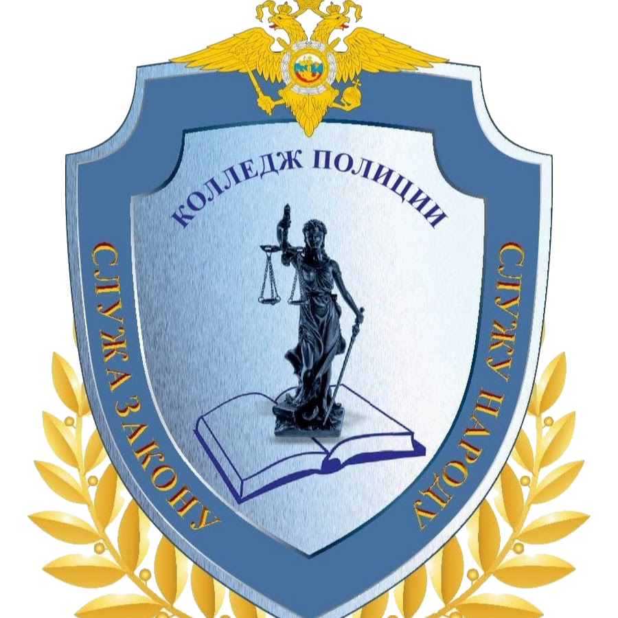

Милицейский колледж создан в структуре Главного управления внутренних дел города
Москвы на основании постановления
Правительства Москвы от 30 июня 1992 г. № 446 «О милицейском колледже».
Распоряжением Правительства Москвы от 4 октября 2011 г. № 776-П
«Об установлении ведомственной подчиненности отдельных
государственных образовательных учреждений среднего профессионального образования» с 1 января 2012 года
установлено ведомственное подчинение государственного
образовательного учреждения среднего профессионального образования «Колледж милиции №1
Главного управления Министерства внутренних дел Российской Федерации по городу Москве»
Департаменту образования города Москвы (с возложением на него функции и полномочия учредителя)
и изменено наименование на государственное бюджетное образовательное учреждение
среднего профессионального образования города Москвы «Колледж полиции».
